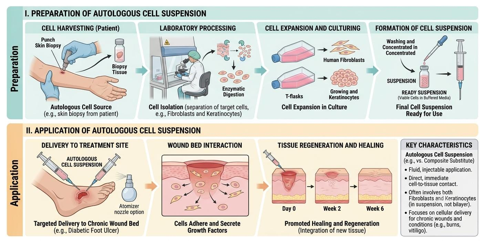

While traditional grafting and dermal scaffolds rely on the mechanical transfer of solid tissues or structural matrices, the latest frontier in reconstructive wound care involves cellular therapies. This approach shifts the paradigm from solid tissue grafting to the liquid application of isolated, highly potent regenerative cells, drastically reducing donor site morbidity while maximizing wound coverage in massive burns.
The most successful clinical manifestation of this is the Autologous Cell Harvesting Device (ACHD), colloquially known as "spray-on skin." Instead of expanding skin mechanically via a mesher, this technique expands skin biologically. A postage-stamp-sized biopsy of the patient's healthy skin is harvested and immediately processed in the operating room.

As illustrated in Fig viii, the biopsy is subjected to rapid enzymatic digestion (using trypsin) to separate the epidermis from the dermis and break the tissue down into a liquid suspension of individual, living cells. This heterogenous suspension contains basal keratinocytes, fibroblasts, and melanocytes. The liquid is then sprayed directly onto a prepared wound bed or over a highly meshed autograft.
The mathematical expansion ratio of this technique is extraordinary. While traditional meshing can expand a graft up to 1:9, an autologous cell suspension can cover a wound area up to 80 times larger than the original donor site (a 1:80 ratio). Once sprayed, the keratinocytes rapidly proliferate and coalesce, forming a confluent epidermal layer in a fraction of the time it would take for a standard wound to epithelialize, effectively bridging the gaps in widely meshed grafts and minimizing scarring.
Beyond epidermal suspensions, Mesenchymal Stem Cells (MSCs) offer a revolutionary avenue for complex thermal wounds. These multipotent cells are easily harvested from bone marrow or the patient's own adipose tissue (Adipose-Derived Stem Cells, or ADSCs).
Unlike traditional grafts, stem cells act as biological conductors via paracrine signaling. Rather than differentiating directly into skin cells, MSCs release a concentrated payload of growth factors, cytokines, and exosomes. This biochemical delivery profoundly modulates the immune response, dampens hyper-inflammation, and actively recruits endothelial cells to forge new blood vessels (angiogenesis).
| Therapeutic Modality | Biological Component | Mechanism of Action | Clinical Application |
|---|---|---|---|
| Autologous Cell Suspension (e.g., RECELL®) | Non-cultured keratinocytes, melanocytes, and fibroblasts. | Rapid epithelialization via direct cellular proliferation over a wide surface area. | Second-degree burns; used in tandem with widely meshed grafts for major third-degree burns. |
| Adipose-Derived Stem Cells (ADSCs) | Multipotent stem cells isolated from subcutaneous fat. | Paracrine signaling; secretes VEGF and TGF-β to promote angiogenesis and reduce fibrosis. | Radiation burns, chronic non-healing ulcers, and scar remodeling therapies. |
| Cell-Free Exosome Therapy | Nanovesicles secreted by stem cells containing mRNA and proteins. | Delivers regenerative genetic instructions without transferring living cells (avoids immune rejection). | Currently in advanced clinical trials for scarless wound healing and dermal regeneration. |
Integrating stem cells with bioengineered scaffolds is yielding unprecedented clinical results. By seeding an Acellular Dermal Matrix with ADSCs prior to implantation, surgeons can significantly accelerate neovascularization, drastically reducing the time required before an epidermal graft can be safely applied.
Furthermore, the horizon is shifting toward cell-free therapeutics. Harvesting only the exosomes secreted by stem cells delivers powerful regenerative benefits without the regulatory, storage, or immunogenic risks of transplanting living cells. This evolution from solid grafts to liquid suspensions, and now to cell-free therapeutics, illustrates the remarkable trajectory of modern wound care.